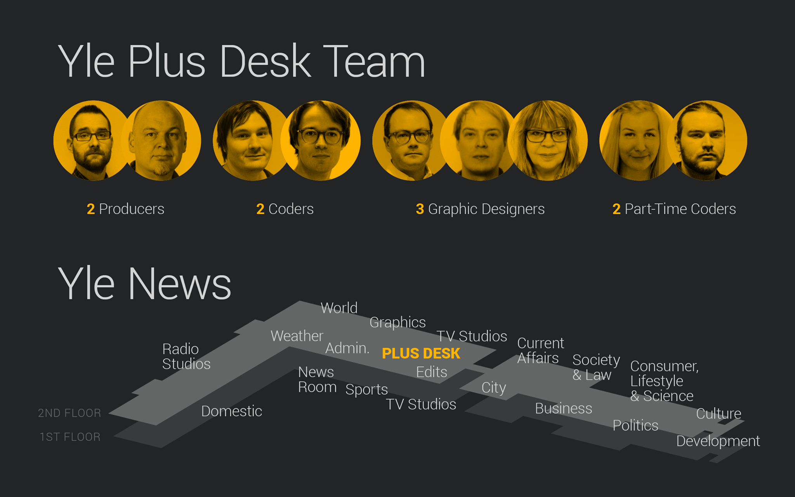

class: center, middle # How To Make A Successful <span class="highlight">Data Story</a> <img src="img/yle_logo.png" style="width: 150px;" /> Teemo Tebest, <span class="highlight">@teelmo</span> --- class: left, middle # Teemo Tebest, Yle * <span class="highlight">Data Journalist</span> * Background in web development and information visualization * Founding member of Yle's datadesk since 2013 ```javascript require('JS, HTML5, PHP, Python, full-stack, MongoDB, GIS, network analysis'); ``` * Twitter: <a href="http://twitter.com/teelmo"><span class="highlight">@teelmo</span></a> * Homepage: <a href="teelmo.info"><span class="highlight">teelmo.info</span></a> --- class: full, middle <div style="position: absolute; width: 100%; text-align: center; text-shadow: 1px 1px 1px #000;"><h1 style="border:0; text-transform: uppercase;"><span class="highlight">What I Actually Do</span></h1></div> --- class: full, middle  --- class: left, middle # Plus Desk at Yle News <img src="img/hahmottelu.png" style="width: 250px; float: right; padding-left: 30px; margin-right: -70px; margin-top: 10px;"> * We make online stories <span class="highlight">together</span> with other teams * The more <span class="highlight">bigger</span> and <span class="highlight">investigative</span> projects, less fast-ones * From 350 stories in 2013 to 150 in 2016 * Half of <span class="highlight">the most read stories</span> at Yle came from Plus Desk --- class: left, middle # Succesful data story: <span class="highlight">3 examples</span> 1. <span class="highlight">Pension</span> Calculator 2. <span class="highlight">Housing</span> Machine 3. <span class="highlight">Municipality</span> Radar ```javascript if (Motivation === true) { if (Implemantion === true) { return Outcome } } ``` --- class: left, middle # <span class="highlight">Story</span> When Can You Retire And For How Long <p><span class="highlight">Motivation</span> Pension system reform</p> <p><span class="highlight">Implementation</span> Embedded calculator</p> <p><span class="highlight">Outcome</span> One of most read stories in 2016</p> <div style="float: right"><a href="https://docs.google.com/spreadsheets/d/1Gj3uqUzWOUeDGamxc8Ig_Owu-EfZzzs-MaLSLESf0C4/edit#gid=1128173612" target="_blank">» data</a></div><br /> <div style="float: right"><a href="http://yle.fi/uutiset/3-9273402" target="_blank">» story</a></div><br /> <div style="float: right"><a href="https://dashboard.yle.fi/article/3-8944418" target="_blank">» numbers</a></div> --- class: left, middle # One of most read stories in 2016, <span class="highlight">Why?</span> * Calculator <span class="highlight">placed on top</span> of the article * Had a <span class="highlight">default result</span> * Easy to use * Simple and <span class="highlight">“Suprising”</span> message * <span class="highlight">Shareable</span> result, over 80,000 FB actions * Funny → <span class="highlight">Memorable</span> --- class: left, middle # Problems / Obstacles * Creating a story from <span class="highlight">Excel</span> * <span class="highlight">Two datasets</span>, pick more relevant * Use of <span class="highlight">understandable language</span> and terms --- class: left, middle # <span class="highlight">Story</span> Can you afford an apartment <p><span class="highlight">Motivation</span> First-time home buyers</p> <p><span class="highlight">Implementation</span> Map-based application</p> <p><span class="highlight">Outcome</span> Unique view to housing markets</p> <div style="float: right"><a href="https://www.theguardian.com/society/ng-interactive/2015/sep/02/unaffordable-country-where-can-you-afford-to-buy-a-house" target="_blank">» inspiration</a></div> <div style="float: right"><a href="https://docs.google.com/spreadsheets/d/1ZlljAPxWaCHFbhdvpKfoxN3b1an9RniMby60YMNeJQo/edit#gid=1849495620" target="_blank">» data</a></div><br /> <div style="float: right"><a href="http://yle.fi/uutiset/3-8944418" target="_blank">» story</a></div><br /> <div style="float: right"><a href="https://dashboard.yle.fi/article/3-9273402" target="_blank">» numbers</a></div><br /> --- class: left, middle # Unique view to housing markets, <span class="highlight">Why?</span> * Compined housing prices with income * Size instead of price * Showed the segregation between cities and rural areas --- class: left, middle # Problems / Obstacles <img src="img/omakotitalo.jpg" style="width: 250px; float: right; padding-left: 30px; margin-right: -70px; margin-top: -20px;"> <img src="img/kerrostalo.jpg" style="clear:both; width: 250px; float: right; padding-left: 30px; margin-right: -70px; margin-top: 10px;"> * Maps with data on mobile devices 😡 * Lack of sales data in most areas * No data from houses, only apartments * Application ↔ <a href="http://yle.fi/uutiset/3-8938636">Story</a> * Map colorization --- class: left, middle # <span class="highlight">Story</span> What is the status of your municipality <p><span class="highlight">Motivation</span> Upcoming elections</p> <p><span class="highlight">Implementation</span> Municipality Radar</p> <p><span class="highlight">Outcome</span> Noda Awards '17 nominee</p> <div style="float: right"><a href="https://docs.google.com/spreadsheets/d/15M_MyAudZXCMASTlbP4SSA3BTQFlw7RRxVwa47uDcEs/edit#gid=0" target="_blank">» data</a></div><br /> <div style="float: right"><a href="http://yle.fi/uutiset/3-9192528" target="_blank">» story</a></div><br /> <div style="float: right"><a href="https://dashboard.yle.fi/article/3-9192528" target="_blank">» numbers</a></div> --- class: left, middle # Noda Awards '17 nominee, <span class="highlight">Why?</span> * Quick <span class="highlight">Overview</span> → <span class="highlight">Details</span> on Demand * <span class="highlight">Personalized</span> and <span class="highlight">Familiar</span> feel * Municipality arms, Subtitle, Background map, Street view, Municipality text * We <span class="highlight">crowdsourced</span> Valkompassen questions * Was adopted by municipalities and by public * <a href="http://yle.fi/uutiset/3-9252893" target="_blank">Data and process was opened</a> --- class: left, middle # Problems / Obstacles * <span class="highlight">Getting data</span> for current municipalities * Merging various data sources and formats into one sheet * Learning <span class="highlight">statistical analysis</span> and standard deviation * Getting unified municipality texts and handling updates * <span class="highlight">Finishing and polishing</span> * Changes in Google API usage limitations * Lack of HTTPS → No automated location --- class: center, middle # Thank you! <span class="highlight">Questions?</span> <img src="http://upload.wikimedia.org/wikipedia/commons/thumb/f/f1/Heart_coraz%C3%B3n.svg/1024px-Heart_coraz%C3%B3n.svg.png" alt="" style="width: 300px;"/><br /> Teemo Tebest, <a href="http://twitter.com/teelmo"><span class="highlight">@teelmo</span></a>